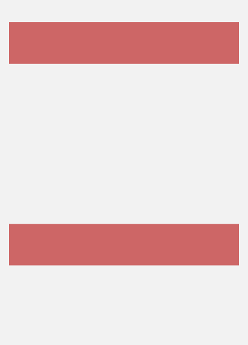
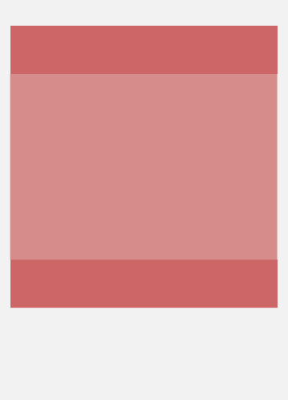
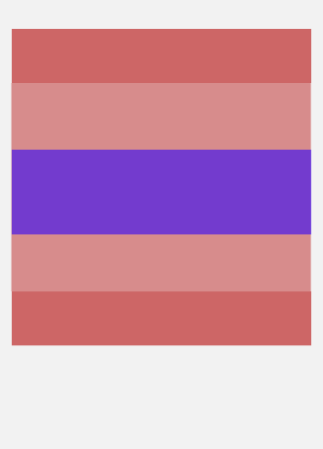

Git
Controle de
versão
moderninho
Pra começar...
Pergunta!
Controle
de Versão?
Pergunta 2
Versiona o que?
Pergunta 3
Por que versiona?
Mais de contexto...
Tecnologia?
Qual VCS
você usa?
Tecnologia?
SVN SourceSafe Hg PPC-PPL TFS CVS Git
Diferenças de tecnologia
Locks
Source Safe, ClearCase, etc
Diferenças de tecnologia
Assíncrono
SVN, CVS, etc
Diferenças de tecnologia
Assíncrono
Versões locais
Moderninho
Git, Hg, etc
Moderninho?
Pra ser hipster?
Não
Moderninho
=>
Descentralizado
Descentralizado
Não precisa de servidor
Você já configurou um SVN Admin?
Descentralizado
Fácil
Versionar
qualquer coisa!
Tipo essa palestra
Descentralizado
Fácil fazer
commits pequenos
Por que
commits pequenos?
Ou melhor...
Problema dos
commits grandes?
Sabe quando...
Sabe quando...
Sabe quando...
Sabe quando...
Ao mesmo tempo...
E ele commitou primeiro
Sabe quando...
Hmm...

Conflito!
:-(
Então...
Commits pequenos!
Com commits pequenos...
Com commits pequenos...
Com commits pequenos...
Ao mesmo tempo...
E ele commitou primeiro